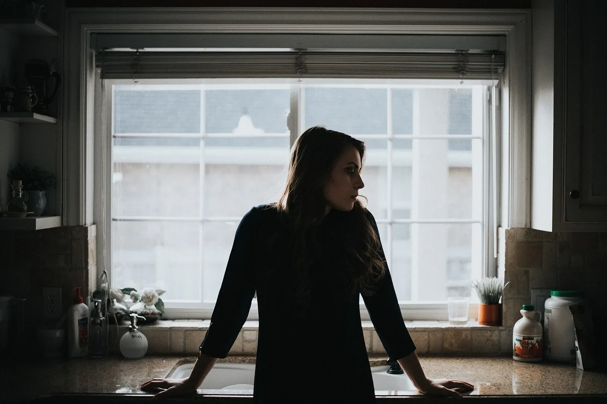
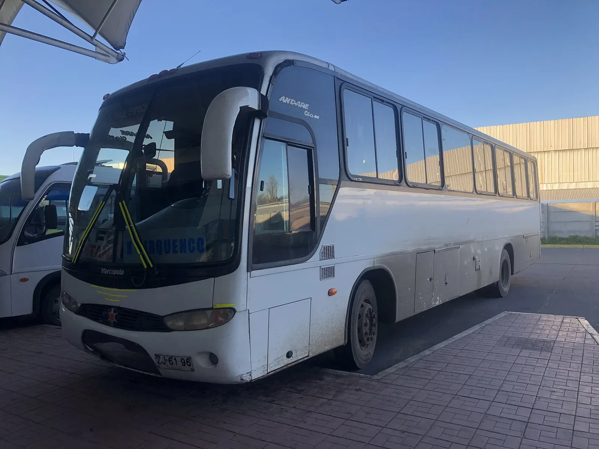

작가
문하린입니다
작
가
문
하
린
입
니
다
에세이 세 권을 썼고, 출판사에서 10년 동안 책 40권을 편집했습니다. 지금은 매주 목요일 신문에 짧은 글을 연재합니다.
원고 의뢰하기
쓴 책

『부엌에서 쓴 편지』
에세이
엄마의 부엌에서 보낸 일 년을 적은 에세이. 2025 · 248쪽

『느린 버스 노선표』
여행 에세이
시골 버스를 타고 다닌 사계절 기록. 2023 · 212쪽
『밑줄 긋는 밤』
독서 에세이
편집자로 일하며 만난 문장들. 2021 · 196쪽